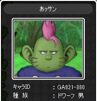
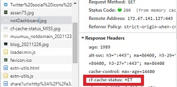

ドラクエXあッサンのブログです
ドラクエXプレイヤーのあッサンです |
次へ ＜ ＞ 前へ
2021/12/31 13:55
クラウドフレア設定でcf-cache-statusは全部がMISSではなかった(?_?)
HITしてたら高速化されるから高速化について無意味ではなくなった
これはミスで
こっちはヒット

よし出かける前にドラクエしよｗｗｗ
2021/12/31 13:55
クラウドフレア設定でうまくいってないねダッシュボード出ないけど
とりあえず放置しとこしかしwww付きでリクエストしたら
ヘッダのcf-cache-statusすら出ない(´Д｀;)
でもね～保護はされてるみたいだから無料だし感謝です
2021/12/31 10:36
クラウドフレア設定したら
あ～ミスってる
初期設定！？
2021/12/31 00:26
とりあえずドメイン取得を別名で他の会社でやってみたらできました
DQXで源世庫に行って遊んだりしてたけどかかった時間数分でした
新取得ドメイン名a3dqx.tokyoになりました
使えないa3dqx.xyzはメールで問い合わせ中です休みだから当分回答は来ないでしょう
2021/12/30 14:38
シェアボタンのOGPはfacebookのキャッシュを削除して解決してOK
後サイト作成前のTODOは
１ドメイン設定メール設定も可能ならする
２使用する管理サーバーを設定する
※Google Analyticsは設定して動作はしてる
使用方法は使いながらおぼえるとするｗ
３ローカル環境整理
特にソース管理のソフトの選定
エディタの選定やらプラグインやら
４アフィリエイト広告の設定
2021/12/30 14:24
ドメイン認証まだなんか～
24時間経ってないけど何かミスったかな～！？
2021/12/30 00:28
上のSNS用ボタンをシェアボタンに変更しました
SNSのシェアボタンでハマって
結局OGつけてないだけだと気づいて
疲れてきたそろそろ疲れたし寝よう
2021/12/29 23:14
上のSNS用ボタンをシェアボタンに変更しましたまだOGP入れてないです
LINEのシェアボタンがサーバー上でないと表示されないことでハマった
Chromeの開発者ツール使って見た結果ホームページが置いてあるファイルパスが
設定されている事を確認してなんとなく納得jsでやってるみたいなんであそこかな・・・
2021/12/29 18:24
レンタルサーバーでドメインチェックがエラーになって取得した
ドメイン名a3dqx.xyzが設定できなかったの
気になってた。
エラー内容をトラブルシューティングしててパッとした答えが見つからなかったけど
受信メール見直してたら取得したドメインをメール返信で認証してないことに
気が付いて即認証したので少し時間空けて設定する予定多分これで取得ドメインを設定できると思う
ひとまずホームページの練習台の設定がなんとかできた感じかな～
並行で他のサイトも試行したいんだけどまずは作業効率考えてローカルでの環境を整えることが先よね～
あとドラクエＸもしたいｗ
2021/12/27 20:48
上のLINEアイコンのリンク先を作成するのに30分位使った
HTML難しいな～と昔から思いつつググって見つけた親切なサイトから
いい加減に理解もしないでコピペとかで作成しました
ソースコードがカオスにならないうちに理解して修正しようとは思っているけどまた先になりそう
明日も朝早いんで寝たいしね
ドメイン名の設定やらしないといけない事は色々とあるけど少しずつ遊び感覚で片付けようと思う